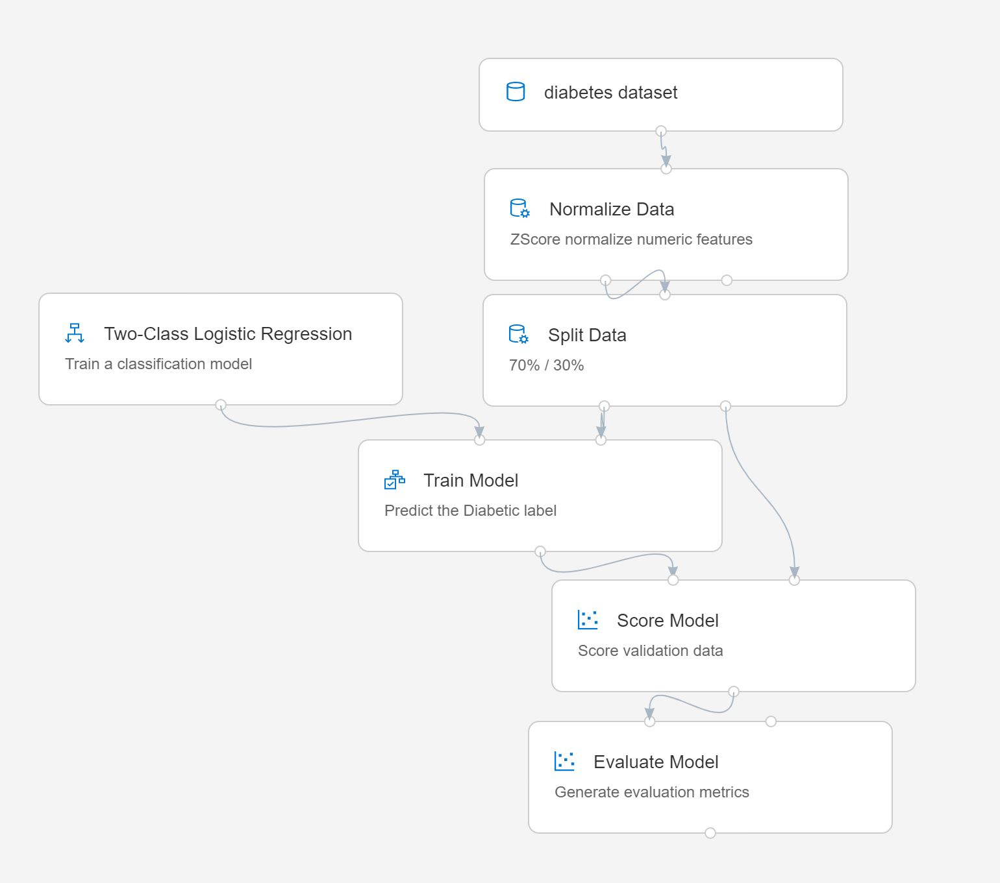

Lab 2A: Creating a Training Pipeline with the Azure ML Designer
The Designer interface provides a drag & drop environment in which you can define a workflow, or pipeline of data ingestion, transformation, and model training modules to create a machine learning model. You can then deploy this pipeline as a real-time endpoint that client applications can use for inferencing (generating predictions from new data).
Before You Start
Before you start this lab, ensure that you have completed Lab 1A and Lab 1B, which include tasks to create the Azure Machine Learning workspace and other resources used in this lab.
Task 1: Create a Designer Pipeline and Explore Data
To get started with Designer, first you must create a pipeline and add the dataset you want to work with.
- In Azure Machine Learning studio for your workspace, view the Designer page and create a new pipeline.
- In the Settings pane, change the default pipeline name (Pipeline-Created-on-date) to Visual Diabetes Training (if the Settings pane is not visible, click the ⚙ icon next to the pipeline name at the top).
- Note that you need to specify a compute target on which to run the pipeline. In the Settings pane, click Select compute target and select the aml-cluster compute target you created in the previous lab.
- On the left side of the designer, expand the Data section, and drag the diabetes_dataset data asset you created in the previous exercise onto the canvas.
- Select the diabetes_dataset module on the canvas, and view its settings. Then on the outputs tab, click the Visualize icon (which looks liks a column chart).
- Review the schema of the data, noting that you can see the distributions of the various columns as histograms. Then close the visualization.
Task 2: Add Transformations
Before you can train a model, you typically need to apply some preprocessing transformations to the data.
In the pane on the left, expand the Data Transformation section, which contains a wide range of modules you can use to transform data and pre-process it before model training. Drag a Normalize Data module to the canvas, below the diabetes_dataset module. Then connect the output from the diabetes_dataset module to the input of the Normalize Data module.
Select the Normalize Data module and view its settings, noting that it requires you to specify the transformation method and the columns to be transformed. Then, leaving the transformation as ZScore, edit the columns to includes the following column names:
- PlasmaGlucose
- DiastolicBloodPressure
- TricepsThickness
- SerumInsulin
- BMI
- DiabetesPedigree
Note: We're normalizing the numeric columns put them on the same scale, and avoid columns with large values doiminating model training. You'd normally apply a whole bunch of pre-processing transformations like this to prepare your data for training, but we'll keep things simple in this exercise.
Now we're ready to split the data into separate datasets for training and validation. In the pane on the left, in the Data Transformations section, drag a Split Data module onto the canvas under the Normalize Data module. Then connect the Transformed Dataset (left) output of the Normalize Data module to the input of the Split Data module.
Select the Split Data module, and configure its settings as follows:
- Splitting mode Split Rows
- Fraction of rows in the first output dataset: 0.7
- Random seed: 123
- Stratified split: False
Task 3: Add Model Training Modules
With the data prepared and split into training and validation datasets, you're ready to configure the pipeline to train and evaluate a model.
- Expand the Model Training section in the pane on the left, and drag a Train Model module to the canvas, under the Split Data module. Then connect the Result dataset1 (left) output of the Split Data module to the Dataset (right) input of the Train Model module.
- The model we're training will predict the Diabetic value, so select the Train Model module and modify its settings to set the Label column to Diabetic (matching the case and spelling exactly!)
- The Diabetic label the model will predict is a binary column (1 for patients who have diabetes, 0 for patients who don't), so we need to train the model using a classification algorithm. Expand the Machine Learning Algorithms section, and under Classification, drag a Two-Class Logistic Regression module to the canvas, to the left of the Split Data module and above the Train Model module. Then connect its output to the Untrained model (left) input of the Train Model module.
- To test the trained model, we need to use it to score the validation dataset we held back when we split the original data. Expand the Model Scoring & Evaluation section and drag a Score Model module to the canvas, below the Train Model module. Then connect the output of the Train Model module to the Trained model (left) inout of the Score Model module; and drag the Results dataset2 (right) output of the Split Data module to the Dataset (right) input of the Score Model module.
- To evaluate how well the model performs, we need to look at some metrics generated by scoring the validation dataset. From the Model Scoring & Evaluation section, drag an Evaluate Model module to the canvas, under the Score Model module, and connect the output of the Score Model module to the Score dataset (left) input of the Evaluate Model module.
Task 4: Run the Training Pipeline
With the data flow steps defined, you're now ready to run the training pipeline and train the model.
Verify that your pipeline looks similar to the following (note that the image includes comments in each module to document what they're doing - it's not a bad idea to do this when you're using the Designer for a real project!):

At the top right, click Run. Then when prompted, create a new experiment named visual-training, and run it. This will initialize the compute target and then run the pipeline, which may take 10 minutes or longer. You can see the status of the pipeline run above the top right of the design canvas.
Tip: While it's running, you can view the pipeline run as a job on the Jobs page (pipeline runs are listed as pipeline jobs, grouped under the visual-training experiment). Switch back to the Visual Diabetes Training pipeline on the Designer page when you're done.
After the Normalize Data module has finished (indicated by a ✅ icon), select it, and in the Settings pane, on the Outputs tab, in the Transformed dataset section, click the Visualize icon, and note that you can view statistics and distribution visualizations for the transformed columns.
Close the Normalize Data visualizations and wait for the rest of the modules to complete. Then visualize the Evaluate Model module to see the performance metrics for the model.
Note: The performance of this model isn't all that great, partly because we performed only minimal feature engineering and pre-processing. You could try some different classification algorithms and compare the results (you can connect the outputs of the Split Data module to multiple Train Model and Score Model modules, and you can connect a second scored model to the Evaluate Model module to see a side-by-side comparison). The point of the exercise is simply to introduce you to the Designer interface, not to train a perfect model!